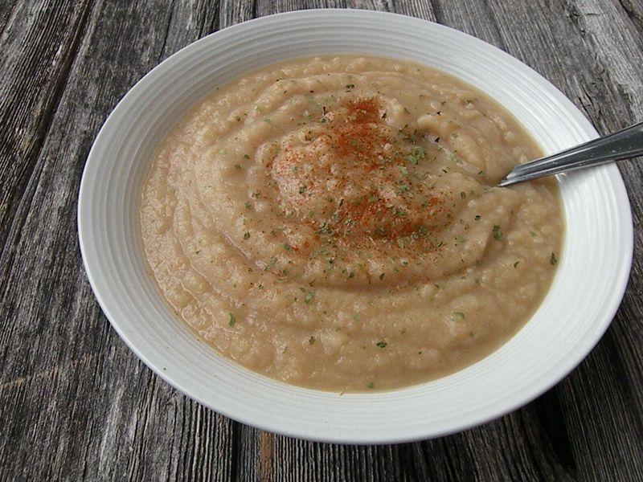

Soupe aux patates et haricots blancs
Préparation: 15 minutes
Cuisson: 20 minutes
Ingrédients
-
2 c. à table d'huile

-
1 oignon
-
4 gousse d'ail
-
1 c. à table de vinaigre de vin blanc
-
4 t de bouillon
-
1.5 lb de patate
-
0.5 c. à thé de moutarde de dijon
-
1 c. à thé de jus de citron
-
0.25 c. à thé de paprika fumé
-
0.5 t de haricots blancs secs
-
sel
-
poivre